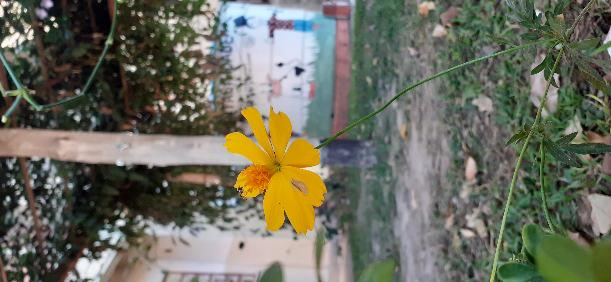
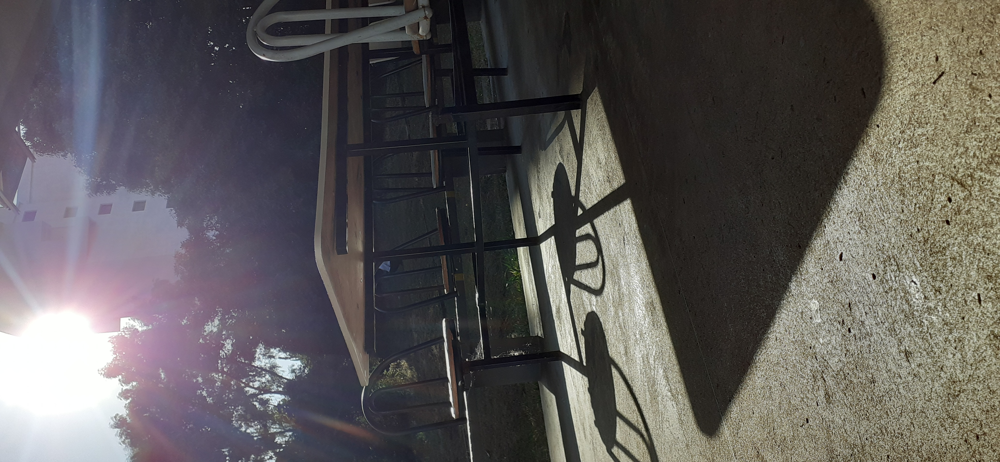
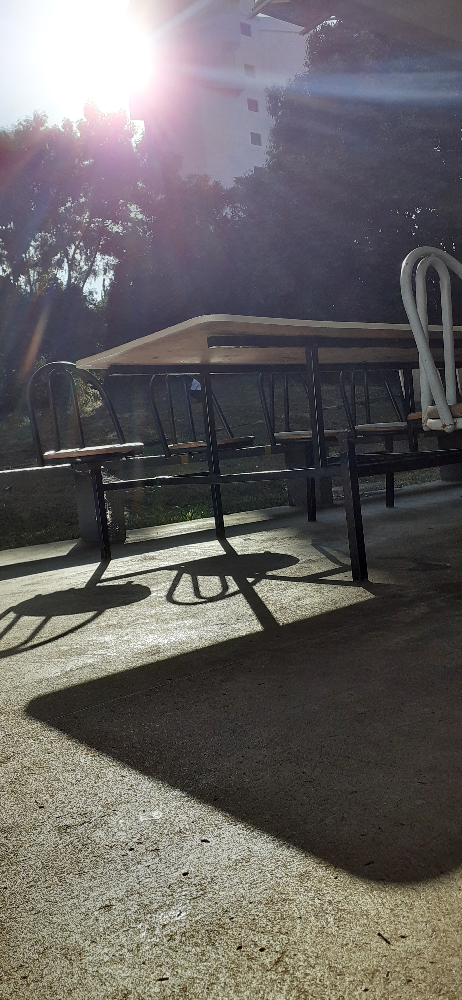
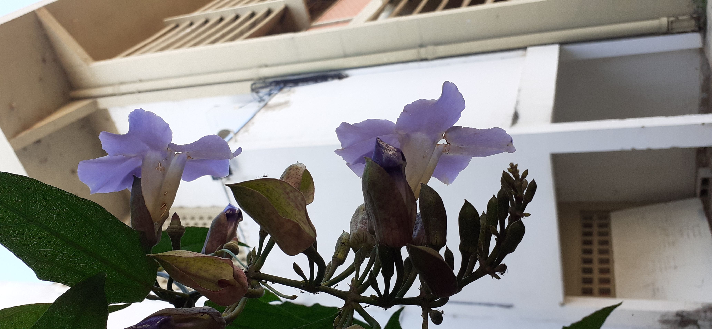
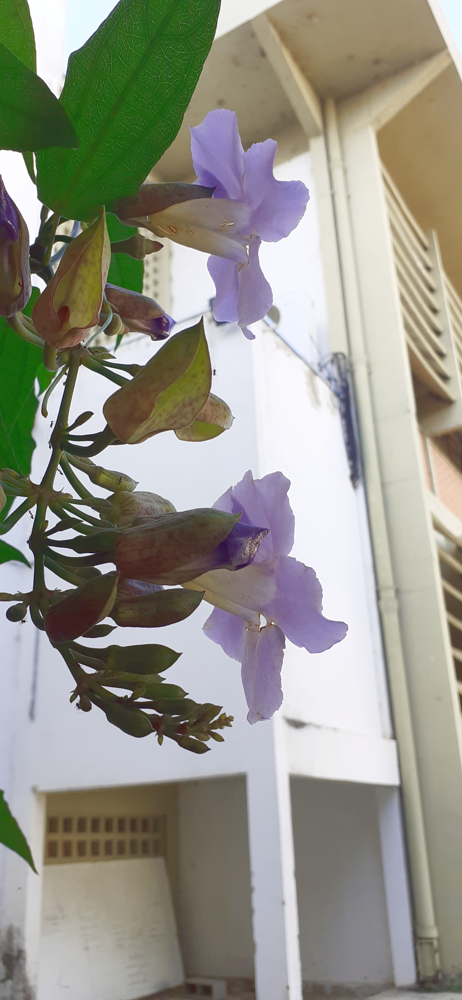
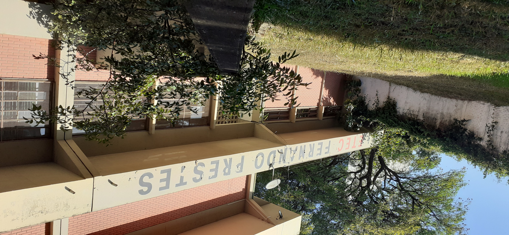
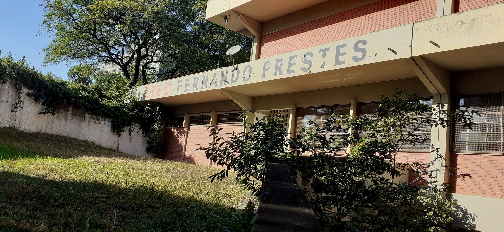
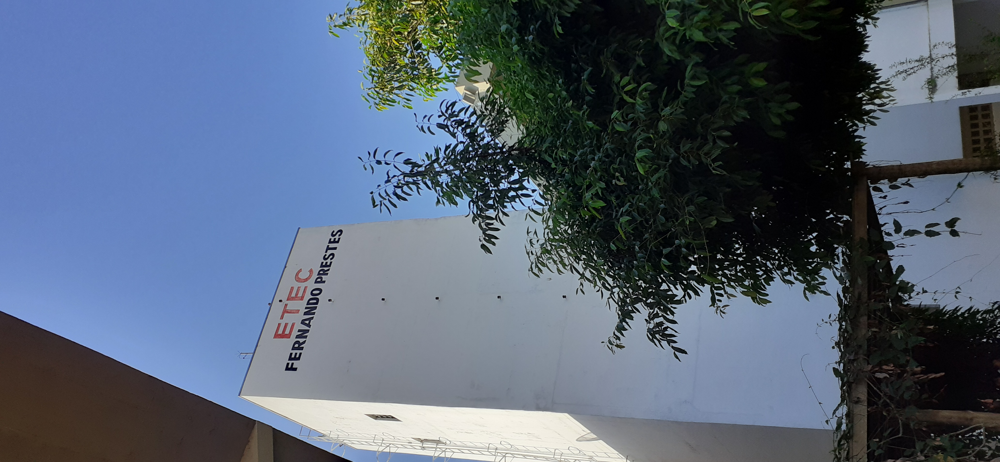
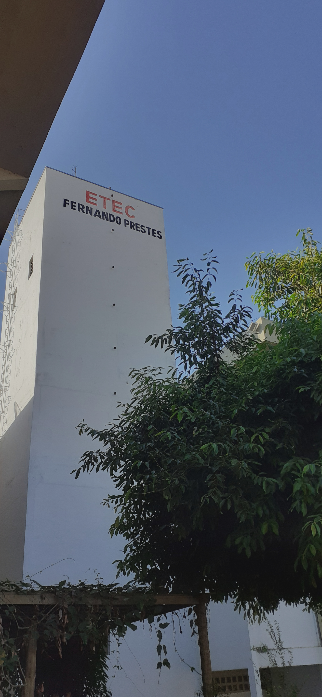

A beleza na ETEC Fernando Prestes.
FOTO 1: Flor próxima à cantina.


efeitos usados pelo GIMP:
→nível de preto:-0,005.
→nível de exposição:0,800.
FOTO 2: Sombras na cantina.


efeitos usados pelo GIMP:
→ Efeitos de sombras/altas: sombras: 42,26.
→Ajuste de cor de sombras: 55,65.
→Tons claros (destaques): 61,90.
→Nível de exposição:0,800.
FOTO 3: Flor próxima à cantina.


efeitos usados pelo GIMP:
→Efeitos de matiz e saturação: Matiz: 08,00.
→luminosidade: 26,00.
FOTO 4: Etec Fernando Prestes


efeitos usados pelo GIMP:
→Ajustar brilho: -24,00.
→Ajustar contraste: 10,00.
FOTO 5: Etec Fernando Prestes


efeitos usados pelo GIMP:
→Ajustar brilho: -32,00.
→Ajustar contraste: 11,00.